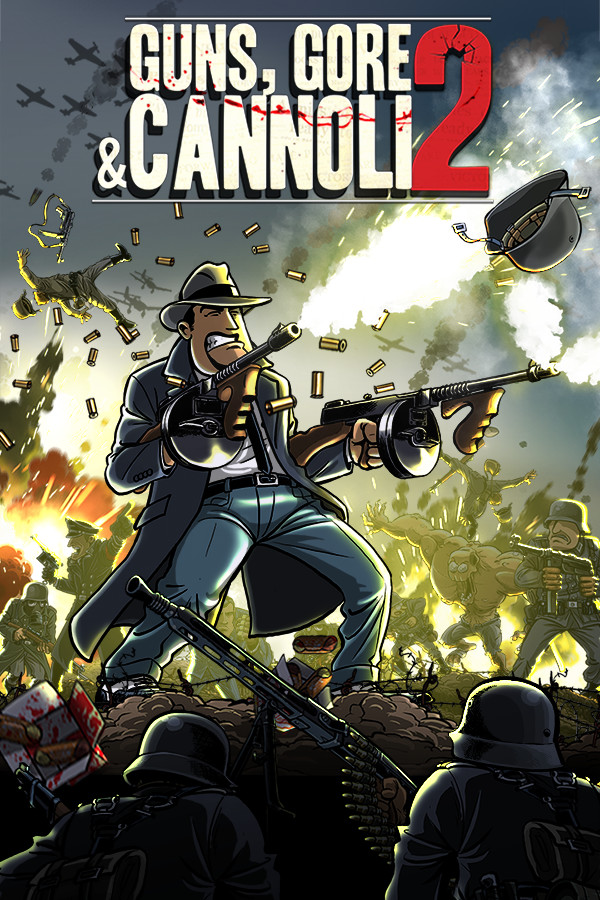

Guns, Gore & Cannoli 2
Guns, Gore & Cannoli 2
Details
|  | |
| Playtime | Not Played |
| Last Activity | Never |
| Added | 4/16/2022 10:07:50 |
| Modified | 8/10/2025 9:14:44 |
| Completion Status | #Want to Play |
| Library | Playnite |
| Source | Wanderer |
| Platform | PC (Windows) |
| Release Date | 3/2/2018 |
| Community Score | 90 |
| Critic Score | 80 |
| User Score | |
| Genre | Action |
| Developer | Claeysbrothers Rogueside |
| Publisher | Rogueside |
| Feature | Co-Op Cross-Platform Multiplayer Full Controller Support Multiplayer Online Co-Op Online Pvp Pvp Remote Play On TV Shared/Split Screen Shared/Split Screen Co-Op Shared/Split Screen Pvp Single Player Stats |
| Links | Community Hub Discussions Guides News Store Page PCGamingWiki Achievements |
| Tag | [EMT] Logo Missing |
Description
Welcome to the 1940’s. Europe is being torn apart by the war, the USA is preparing for battle and the mob does business as usual. Only this time they went too far, even for Vinnie’s standards.
Prepare yourself to go to war after you make a shocking discovery about what actually happened during the end-stage of the Thugtown Massacre from Guns, Gore & Cannoli 1.
"Just when you thought you were out, we’re pulling you back in!"
Story
1944, the war in Europe is entering its final stage. 15 years have passed since Vinnie survived the Thugtown Massacre. But now, some loose ends start crawling out of the past, dragging Vinnie as far as the European battlefield of World War 2. Find out who is chasing Vinnie around like a dog, turning all his friends into foes.
Key features:
Guns, Gore & Cannoli 2 continues the rich, engaging gangster story of the first game and includes all the fast paced action you’ve come to love, we made the best even better, with:
Prepare yourself to go to war after you make a shocking discovery about what actually happened during the end-stage of the Thugtown Massacre from Guns, Gore & Cannoli 1.
"Just when you thought you were out, we’re pulling you back in!"
Story
1944, the war in Europe is entering its final stage. 15 years have passed since Vinnie survived the Thugtown Massacre. But now, some loose ends start crawling out of the past, dragging Vinnie as far as the European battlefield of World War 2. Find out who is chasing Vinnie around like a dog, turning all his friends into foes.
Key features:
Guns, Gore & Cannoli 2 continues the rich, engaging gangster story of the first game and includes all the fast paced action you’ve come to love, we made the best even better, with:
- Upgraded character mobility
Vinnie has received a massive upgrade in his mobility features. 360 aiming, double jumping, kicking, jump-kicking, dodge rolls, somersaults, dual guns and a weapon wheel. - Campaign mode
Guns, Gore & Cannoli 2 features a full single or multiplayer campaign mode, packed with action, humor and animated cutscenes. - Rich environments
We pushed our artists to the limits to produce the best immersive, atmospheric backgrounds, smoothest animations, and coolest special effects, setting a new benchmark for 2D games. Look for opportunities to bring down walls, explode barrels, drop crates on top of enemies, blow up cars and even kick your enemies through doors. Enjoy watching the corpses of your enemies fly through the air like ragdolls after you blast them away with your rocket launcher. - Immersive world and period
Walk around in the European battlefields of World War 2. Every level of Guns, Gore & Cannoli breathes the 1940’s. Every inch of the game is like a picture straight from the second World War era. The cars, the furniture, the speakeasy clubs, the music, the propaganda posters, the streets and the weaponry reflect the turbulent time that the 1940’s were. - Online and local Co-op mode
You don’t want to die alone in the trenches? Well round up a platoon of 4 players and get blasting. Play as Vinnie in the solo campaign, or with up to 3 friends together while fighting through hordes of Nazis, zombies, monster, gangsters, cops, soldiers, tanks, submarines... in this all-new and incredibly fun arcade-style co-op action game. Teamwork is essential to surviving waves of enemy goons. - Humor
‘War is hell’ unless you are Vinnie Cannoli and you turn every problem into a cynical joke, blurting out one-liners and snappy comments after a nice, juicy kill. Guns, Gore & Cannoli 2 will be a fun experience, not only to play but also to watch. Funny one-liners, screaming deaths, comical dialogs and hilarious enemies make you play this violent kill-simulator with a smirky grin on your face.